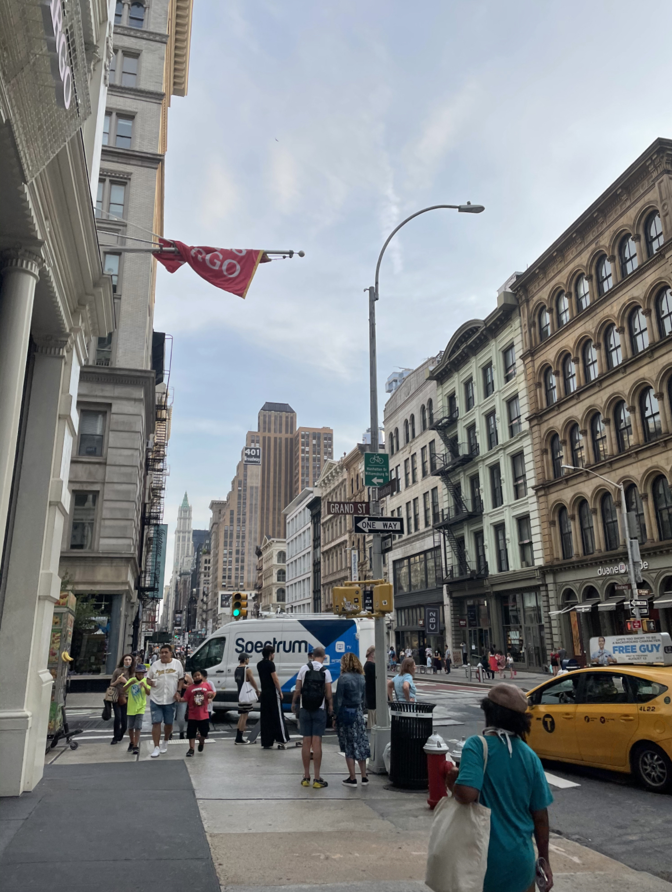

Favortie Spots in North America: Inside of the United States
New York City, NY
Madison, WI

Favorite Activity
While in Jackson Hole, I went paragliding and let me tell you it was on of the best things I have done in my entire life. We stayed in Teton Village and multiple people told my mom and I it was a life changing experience, so we decided to take a leap of faith. It truly was not scary and for those 8 minutes in the sky I couldn't think about anything but the beauty I was surrounded by. If you ever get the chance, take a leaf of faith and go paragliding in Jackson Hole, WY.
Favorite Trip
As NYC is my city, I sometimes take it for granted. I have grown up going there many times every year and often forget that it is not everyone else's city! My most cherished memory in New York City is from about five years ago when my little brother got a part in Lion King in his middle school play. That night we surprised him by going to see the Lion King on Broadway - which was an awesome show and I recommend everyone to go see it! It was such a fun night with my family.
Favorite Resturaunt
It's crazy how we have all ended up in Madison, Wisconsin from very different places. I have come to love this little city and never find the exploring to end. There is always a new restaurant or shop that I have yet to go into. Personally, coming from New York City I would say I am surrounded by some really good food. My favorite restaurant here is Lucille’s. Whenever I have family of friends visiting, I made sure to make a reservation!